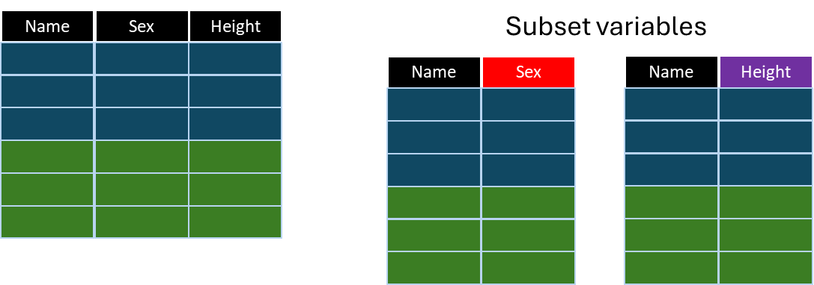

*Copyright @ www.mycsg.in;
What is the word meaning of subset
A part of a larger group of related things.
Subset variables from a dataset
Subset variables from a dataset

Where do we need to subset data in terms of variables
Earlier lessons focused on subsetting observations using `where` or `if` logic
In this lesson, we focus on selecting only the required variables from an existing dataset
Variable subsetting reduces clutter and creates output datasets tailored to the programming task
Create sample input datasets
data class; set sashelp.class; run; data cars; set sashelp.cars; run;
Copy Code
View Log
SAS Log
data class; set sashelp.class; run; NOTE: There were 19 observations read from the data set SASHELP.CLASS. NOTE: The data set WORK.CLASS has 19 observations and 5 variables. NOTE: DATA statement used (Total process time): real time 0.00 seconds cpu time 0.00 seconds data cars; set sashelp.cars; run; NOTE: There were 428 observations read from the data set SASHELP.CARS. NOTE: The data set WORK.CARS has 428 observations and 15 variables. NOTE: DATA statement used (Total process time): real time 0.00 seconds cpu time 0.01 seconds
`class` and `cars` will be used in the examples below
Review the datasets and notice that they contain many more variables than may be needed for a particular task
View Data
Dataset View
Subset variables using the KEEP statement
The `keep` statement lists the variables that should be written to the output dataset
All other variables are excluded from the final output dataset
Create a dataset named age by keeping the variables Name and Age from class dataset
Notice in the log how many variables are written to the output dataset
Only the listed variables appear in the dataset `age`
data age; set class; keep name age; run;
Copy Code
View Log
SAS Log
data age; set class; keep name age; run; NOTE: There were 19 observations read from the data set WORK.CLASS. NOTE: The data set WORK.AGE has 19 observations and 2 variables. NOTE: DATA statement used (Total process time): real time 0.00 seconds cpu time 0.00 seconds
Inspect `age` and confirm that all other variables from `class` are absent
This is one of the most direct ways to subset variables in a DATA step
View Data
Dataset View
Create a dataset named height_weight by keeping the variables Name, Height, and Weight from class dataset
This is the same idea as the previous example, but with a different variable list
Only `name`, `height`, and `weight` are stored in the output dataset
data height_weight; set class; keep name height weight; run;
Copy Code
View Log
SAS Log
data height_weight; set class; keep name height weight; run; NOTE: There were 19 observations read from the data set WORK.CLASS. NOTE: The data set WORK.HEIGHT_WEIGHT has 19 observations and 3 variables. NOTE: DATA statement used (Total process time): real time 0.01 seconds cpu time 0.00 seconds
Compare `height_weight` with `class` and confirm that only the required variables remain
View Data
Dataset View
Subset variables using the KEEP dataset option
The KEEP dataset option performs variable subsetting while the dataset is being read
This can be more efficient because unnecessary variables are not even brought into the DATA step processing area
data age_height; set class(keep=name age height); run;
Copy Code
View Log
SAS Log
data age_height; set class(keep=name age height); run; NOTE: There were 19 observations read from the data set WORK.CLASS. NOTE: The data set WORK.AGE_HEIGHT has 19 observations and 3 variables. NOTE: DATA statement used (Total process time): real time 0.00 seconds cpu time 0.01 seconds
`age_height` contains only the variables listed in the KEEP dataset option
Compare this approach with the KEEP statement, and note that both achieve a similar final dataset
View Data
Dataset View
Subset variables by dropping unwanted variables
Sometimes it is easier to list the variables you do not want rather than the variables you want
In that situation, the `drop` statement or DROP dataset option is useful
data class_drop; set class; drop sex height weight; run;
Copy Code
View Log
SAS Log
data class_drop; set class; drop sex height weight; run; NOTE: There were 19 observations read from the data set WORK.CLASS. NOTE: The data set WORK.CLASS_DROP has 19 observations and 2 variables. NOTE: DATA statement used (Total process time): real time 0.00 seconds cpu time 0.01 seconds
`class_drop` contains all variables from `class` except the variables listed on the DROP statement
This is especially convenient when only a small number of variables need to be removed
View Data
Dataset View
Key points to remember
Variable subsetting controls which columns are written to the output dataset
Use `keep` when it is easier to list the variables to retain
Use `drop` when it is easier to list the variables to remove
Dataset options such as `keep=` can subset variables as the dataset is read